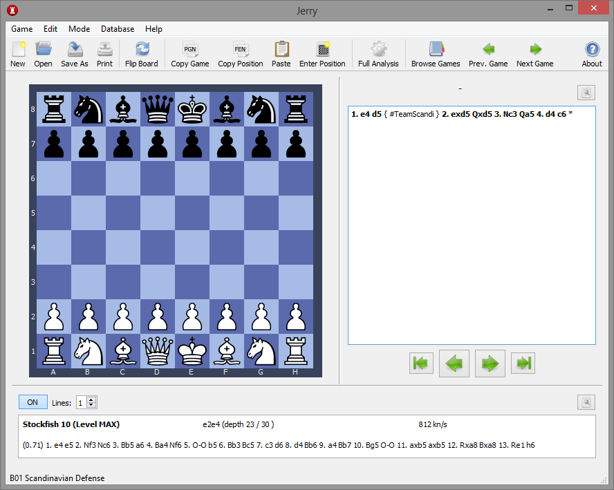

Download
Please choose your operating system:
If you are running Debian, a packages is directly available from the repository in Sid
Features
- based around one of the world's best chess program Stockfish
- play against the computer
- adjust strength levels to match your skill
- enter, edit and analyse games
- fully automatic game analysis
- read and save games in standard PGN format
- copy and paste FEN positions and pgn games from clipboard
- cross-platform: native look on Linux and Windows
- easy and intuitive GUI
- free software (GNU GPL 2)
About
Author, License and Contributions
© 2014 - 2019 Dominik Klein
Jerry is distributed under GNU GPL 2. Credits go out to the Stockfish authors and Marc Lacrosse/Jose-Chess Tool for the opening book compilation All resources are licensed under GNU GPL.